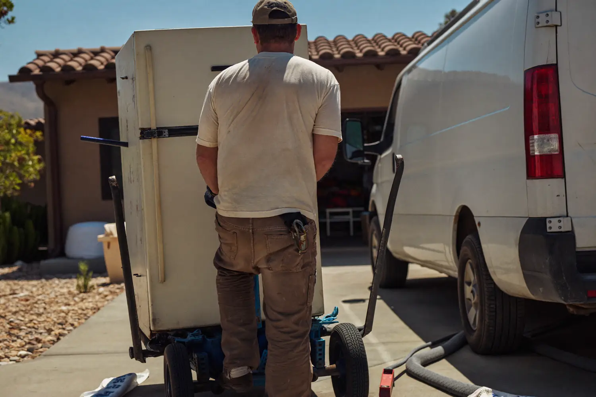

Appliance removal in Casa Grande covers refrigerators, freezers, washers, dryers, ranges, dishwashers, water heaters and window AC units. These are the heaviest single items in most houses, they have sharp edges and bad balance, and the refrigerant ones carry disposal rules a homeowner cannot legally skip. We disconnect, carry and haul, and the refrigerant handling is already in the price.

The crew shuts off and disconnects the unit — water line, gas shutoff or plug, depending on the appliance. Anything still holding water, like a washer or a water heater, gets drained before it moves so it does not soak your floor on the way out.
Then it goes onto a heavy-duty appliance dolly and out. Doorframes get protected, tile floors get covered, and a second person guides on stairs and tight turns.
At the back end, refrigerant units go to a facility where a certified technician recovers the refrigerant before the metal is scrapped. Everything else is sorted for metal recycling, which keeps disposal cost down.
The Arizona detail worth naming: a dead refrigerator left in an uncooled Casa Grande garage through summer becomes a serious odor and pest problem within days, not weeks. That is the one appliance not to leave for later.
Refrigerators, freezers, window AC units and dehumidifiers contain refrigerant. Federal rules require that refrigerant be recovered by a certified technician before the appliance is scrapped or landfilled, because venting it is both illegal and environmentally damaging.
That recovery step costs money, which is why the City of Casa Grande charges a separate fee per refrigerant appliance whether you set it out at the curb or drive it to the landfill yourself. It is not an upcharge; it is the actual cost of doing it correctly.
Our appliance pricing already accounts for that handling. You are not going to get a quote over the phone and then a different number once the crew sees a compressor on the back.
| Appliance | Typical price |
|---|---|
| Refrigerator or freezer (refrigerant recovery included) | $99 – $149 |
| Washer or dryer | $75 – $115 |
| Range, oven or dishwasher | $75 – $120 |
| Water heater (drained and hauled) | $85 – $125 |
| Window AC unit | $65 – $100 |
What raises it: refrigerant recovery on fridges, freezers and AC units. Stairs past one flight. A unit that has to come out of a tight second-floor laundry closet or a built-in cabinet surround.
What lowers it: having the appliance already disconnected and pulled clear of the wall, and bundling several units into one stop. A fridge plus a washer and dryer in a single visit costs far less than three separate calls.
City curbside is the low-cost route if the appliance is not a refrigerant unit, you can get it to the alley or curb yourself, and your zone’s uncontained trash week is close. Casa Grande Public Works at 520-421-8625 can confirm your schedule. Refrigerant units still carry a per-appliance fee.
Hauling it yourself only makes sense if you have a truck, a second person, a working dolly and a free afternoon. A full-size fridge runs 250 to 300 pounds and a water heater full of water is heavier than that. Most back injuries from appliance moves happen on the second stair.
Calling us is the answer when the unit is refrigerant-carrying, when it is upstairs or in a closet, when your bulk week already passed, or when the replacement arrives tomorrow.
Yes. Refrigerator removal in Casa Grande is one of our most common calls, and the refrigerant recovery required before scrapping is already included in the quoted price. Freezers, window AC units and dehumidifiers follow the same process. Expect $99 to $149 for a standard unit.
No. Our crew handles the shutoff and disconnect for water lines, gas and power as part of the job. If you have already pulled the unit clear of the wall, it shaves time off the visit and can lower the price slightly.
Yes. Water heaters get drained on site before they move, which is the step most people skip and regret. Tight closets and second-floor installs take longer but are routine work for appliance removal in Casa Grande.
Refrigerant units go to a facility where a certified technician recovers the refrigerant, then the metal is recycled. Non-refrigerant appliances go straight to metal recycling. Working units in good condition are offered to local donation programs first.
Yes, and it is the cheapest way to do it. A refrigerator, washer and dryer picked up in one Casa Grande stop costs meaningfully less than three separate visits. Tell us everything you have when you call so the crew brings the right equipment.
Refrigerant handling included, no surprise line items. Free estimate on appliance removal across Casa Grande.
Call (520) 569-2190 for a Free Estimate